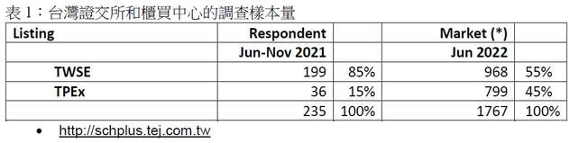

證交所「證券服務雙月刊」專欄－2019～2020 台灣投資人關係（IR）狀況調查簡介（上）TIRI 與台灣證交所合作，於證券服務雙月刊專欄分享投資人關係（IR）、公司治理等實務經驗，
本期內容與國立臺灣大學跨領域行銷傳播研究團隊合作，為「2019-2020 台灣投資人關係概況」研究計畫部分成果。 調查機構：國立臺灣大學 (NTU)、台灣投資人關係協會 (TIRI)
資料整理、作者：NTU研究生 何子明 編審：TIRI秘書長 邱榮振 前言：
國立臺灣大學（NTU）和台灣投資人關係協會（TIRI）於2021年啟動「臺灣投資人關係（IR）狀況調查」合作計畫，希望瞭解臺灣IR實踐狀況。首先於針對2019年和2020兩個年度，於2021年6月至11月展開第一波調查。調查之重點結果將於本刊分兩篇呈現，本文是系列第一篇。 調查樣本說明
本調查由TIRI協助於2021年6月開始向台灣證券交易所(TWSE)的972家上市公司，和證券櫃檯買賣中心(TPEx)的799家上櫃公司，發送請求參與調查的電子郵件，之後持續寄送電子郵件提醒填答，並以電話方式向1100家企業邀請參與。 截至2021年11月底，已收到來自199家上市公司和36家上櫃公司、共計235份回覆。以證交所和櫃買中心的公司數量來說，回應調查的上市公司比例明顯比上櫃公司高（請參閱表1）。  研究團隊以「2021年的年收入」、「截至2021年底的有形資產凈值(TNW)」兩項指標，進行受訪者經營規模分類。2021年收入超過10億新臺幣和TNW超過10億新臺幣的受訪者比例分別為85%和89%，高於台灣所有上市公司55%和79%的對應比例（請參閱表2）。
受訪者的職位及部門分布極廣，包含董事長、財務長、營運經理到財會部人員。值得注意的是，雖然填寫調查表的受訪者可能不負責 IR職能，但其中相當一部分人擁有高級職稱，理應充分參與公司的IR實踐。在表3的總結中，很明顯看到財會職能在IR事務的參與度最高。
儘管根據相關規範，上市櫃企業需指定投資人關係窗口。但本調查結果發現僅有29%的受訪者表示公司在2019年有指定人員或團隊負責處理IR事務，這也意味著71%的公司沒有相同的舉措。2020年的情況也差不多，但11%的受訪者沒有回答相同的問題，可能是因為他們覺得此問題在2019和2020年重複出現是沒有必要的。
當被問及被指派IR工作者是否同時負責其他職務時，2019年和 2020年分別只有 26人和 24人專職於IR工作。受訪者對此問題的回答率在2019年較高，在67名的工作IR管理者中，只有 26 名（即 39%）是專職在IR工作上。
企業對IR工作的期待目標和效益
有關企業如何評估IR工作的預期目標，本調查提供八個選項供受訪者選擇，受訪者亦可自由輸入問卷中未涵蓋的其他目標。
受訪者就每個選項從1到5進行評分，1代表最不重要的目標，5代表最重要的目標。調查結果顯示，沒有任何受訪者額外添加新的目標。表5呈現本項目調查結果，其中目標排名是基於各項目的加權平均分數3或以上的加總。 結果表明，IR目標可根據其相對重要性分為四組：1) 最重要，2) 重要，3) 不重要和 4) 最不重要。前兩組中的各項IR目標在加權平均分數上的差距極小。
從調查結果分析，企業最重要的投資人關係目標為「從市場收集對於我們公司營運和戰略的看法」。這代表公司重視投資人的反饋，力求以對稱溝通為導向來實踐IR。這個目標僅比第二重要目標「公允股價」高一點。畢竟市場總是很難反駁，公司股價為衡量股東如何看待公司價值的最明顯標準之一。然而，當談到公允價格是否應高於當前交易股價或高於多少時，爭論可能會相當激烈。與前兩個最重要的目標幾乎同樣重要的是「與公司的投資人保持良好關係」，這在確保股東對公司決策的支持應可派上用場。
第二組重要的投資人關係目標，包括通過「擴大投資人數量」、「增強分析師覆蓋率」和「增加外資持股」來提高股票流動性。雖然還有許多其他因素會影響流動性，例如分析師覆蓋範圍和海內外投資機構持股，企業投資論述（equity story）的吸引力、公司經營和財務業績的表現以及公司市值規模等。但通常更積極主動的投資人關係拓展工作應與分析師建立更好的關係，這也可能會吸引更多分析師撰寫有關公司的研究摘要或報告，從而提高公司在投資界的知名度，並吸引更多投資人交易其股票，帶來更高的流動性及交易量。
最後，屬於不重要的投資人關係目標項目為「降低股價波動」，最不重要的則是「降低資本成本」。此結果顯示公允股價反映了公司價值，從而降低股權成本。由於台灣商業銀行市場的資金充沛，台灣（尤其以新台幣計價）的債務成本，被認為是較低的。
資料來源
本文為國立臺灣大學跨領域行銷傳播研究團隊「台灣投資人關係概況 」研究計畫部分成果。 |
TIRI